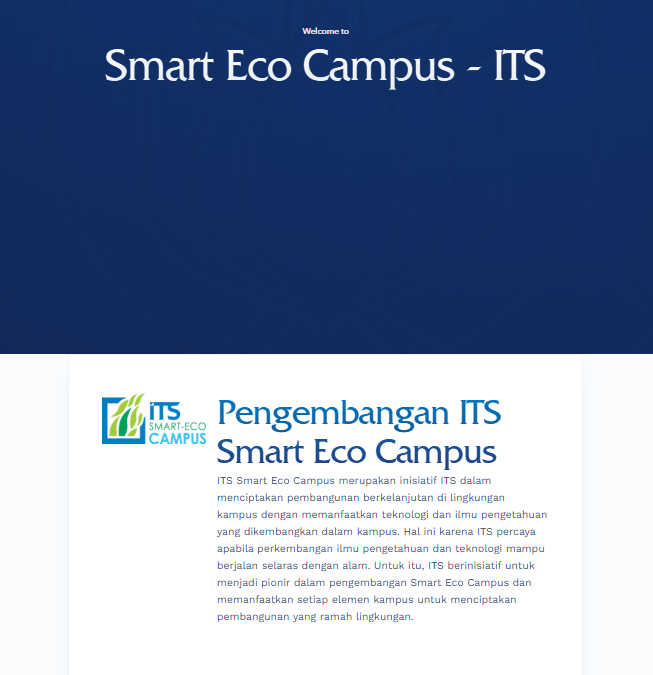

Context
Campus websites across ITS had grown up independently — different platforms, inconsistent structures, and content that was difficult for non-technical staff to update. The goal was to consolidate them onto a shared WordPress foundation so that every unit could maintain its own site without needing a developer on standby.
My role
I worked as the coordinator for the migration: the point of contact between the technical work and the people who actually own the content. That meant less writing code and more making sure the right things moved, in the right order, without anything getting lost.
- Mapped the existing sites and inventoried what content had to survive the move.
- Coordinated schedules and responsibilities across contributors and unit representatives.
- Tracked migration progress per site and resolved blockers as they came up.
Process
The work ran site by site rather than all at once, so problems found early became checklist items for everything that followed.
- Audited and cleaned legacy content before transfer instead of copying old mess forward.
- Standardized on shared WordPress templates so sites stayed visually consistent.
- Verified structure, navigation, and media after each migration.
- Wrote short hand-off guidance so staff could manage their own pages afterward.

Outcome
Campus sites ended up on one common platform with a consistent structure, and content owners were able to make their own updates directly in WordPress. The practical win was reduced dependence on technical help for everyday edits.
- Unified platform across migrated campus sites.
- Consistent templates instead of one-off custom builds.
- Content owners trained to maintain their own pages.
Takeaways
The hardest part of a migration is rarely technical. Most of the effort went into communication — agreeing on what mattered, keeping many people aligned on a shared timeline, and making sure the result was something non-technical staff would genuinely be able to run. Coordination was the deliverable.